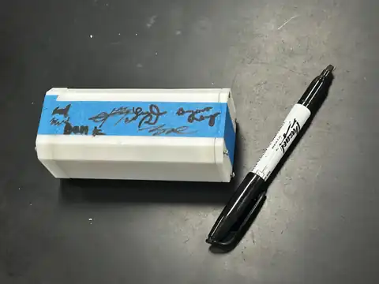
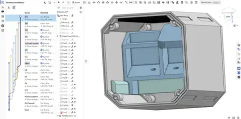

ISS Research Lab
ISS stands for International Space Station. With microgravity, and very different radiation environment, we are able to study phenomena that are impossible to be explored here on ground.
Throughout the year, we brainstorm, design, and conduct experiment from scratch as a team of 8. Because everything that sent onto ISS is very expensive, the whole experiment needs to fit within a microlab (see below) which is even smaller than palm size. There are also a lot other constraints, power, safetiness, everything will be automatic and no astronaut will help us to plug or manipulate anything, which really makes the design process difficult.
Through this experience, I developed valuable skills such as literature review, science communication( presentation, coordinating with different subteam and mentors, outreach), Mechanical engineering(It is not easy to design something that can fit within such a small microlab while ensure stability,functionality, organization of experiment components), Electrical engineering(while I'm not a electrical member, I learned to review electrical pcb schematics, soldering, prototyping, wiring, and troubleshooting with tools like multimeter, oscilloscope), Software engineering(Everything of the experiment need to be controlled by a microcontroller and run automatically in ISS, so I mainly helped with programming prototyping software, main control etc.)
For the past two years, I did two research project:
Feel free to click into specific project that you are interested in!

